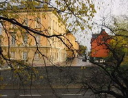
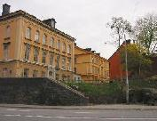
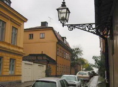
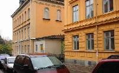

Södermalm i tid och rum. Stockholm
1. Fjällgatan 23 Ur Ett berg vid vattnet, Per-Anders Fogelström, 1969:Husen och tomterna på norrsidan har alla mer eller mindre haft förbindelse med hamnen nedanför, utgjort delar av egendomar som sträckt sig ner till Stadsgården. På 1670-talet upptas området ännu som "ointaget berg" (på Holms tomtkartor) och även på Tillaei karta från 1733 har det markerats som obebyggt berg varför väl knappast någon egentlig bebyggelse förekommit på Fjällgatans norrsida före mitten av 1700-talet. Husraden som småningom växte upp sträckte sig ursprungligen längre österut än i dag men såväl de yttersta tomterna som sammanhanget med hamnen försvann när Stadsgården breddades och delar av berget sprängdes bort i början av detta sekel.
Hörntomten mot Söderbergs trappor tillhörde stadens grosshandlarsocietet som även var ägare till "det därå vid sjöstranden belägna Saltupplagsmagasinet" (P. R. Ferlin: "Stockholms stad", 1858). Mot dåvarande Katarina östra kyrkogata och med husnummer 23 låg ett mindre hus som var boställe för kamreraren i societetens pensionskassa.
En av medlemmarna i societeten var grosshandlaren Frans Schartau (brorson till kyrkoledaren Henrik) som under de svåra krisåren på 1850-talet gjort stora insatser för att rädda köpmannakåren i Stockholm. Till tack anordnades en insamling och Schartau som fick avgöra hur medlen skulle användas föreslog att man skulle bygga ett hus "å Grosshandelssocietetens egen rymliga tomt å Södermalm, för att inredas till Handelsinstitut".
Förslaget antogs vid ett möte i januari 1861 och några år senare fick byggmästaren A. M. Atterberg i uppdrag att uppföra huset efter arkitekten J. F. Åboms ritningar. Sockeln skulle läggas av Gävle- eller rödsandsten i möjligast stora block, golven i trapporna av finslipad ölandskalksten i rutor av olika färger. Kakelugnar beställdes från Åkerlinds fabrik på Kungsholmen och en portomfattning från marmorbruket i Kolmården (pris 843 kronor).
Det blev ett vackert men ganska litet hus, från början endast två våningar högt. I september 1865 kunde man börja verksamheten med 28 elever och grosshandlaren Nils Kemner som föreståndare. Huset innehöll då bara en lärosal medan rektorn hade sin bostad på nedre botten.
Snart blev det trångt i huset. 1884 måste rektorn flytta till det internat som ordningställts på granntomten, 23 A, i ett hus som uppförts där 1883. Internatet gav bostäder för två lärare och arton elever och denna verksamhet fortsatte fram till 1911.
1899-1900 byggde man på en tredje våning på skolhuset, då hade man också börjat ta emot flickor som elever (sedan 1886). Utrymmena var dock fortfarande för små och 1915 stod nya Schartau klart högst uppe på Stigberget.







Bilden tagen från sydväst 1923 Fjällgatan 23 från nordväst år 1906. Här fanns Frans Schartaus handelsskola, innan man flyttade till Stigbergsgatan 26.
Fastigheten ägs av Stockholms stad.